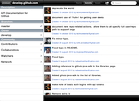

Mission
Improving Software Development
We are committed to improve ways to develop software by
- Working with our customers, promoting and deploying the methods we believe in
- Developing customized and automated work flows supporting these methods on top of tools we believe in
- Contributing to these tools in the open source community to further promote the methods we believe in
GitHub Viewer for iPad
A simple iPad application for browsing users, repositories, commits, files and issues on GitHub.
The application is free browsing public repositories and can be found in the iTunes Store.
If you would like to browse private repositories the full version can also be found in the iTunes Store.

GitHubObjC
A lib wrapping the GitHub API in an Objective C API. The source can be found on GitHub.
GravatarIDObjC
A lib wrapping the Gravatar API in an Objective C API. The source can be found on GitHub.
Magnus Ernstsson
Software architect with over ten years of experience in embedded software development / software project management in large software projects in the mobile phone industry and hands-on implementation of agile processes and tools in SW infrastructure / platform environments.

Daniel Hjort
Software developer with over five years of experience of embedded software and application development in the mobile phone industry. Focused on the many aspects of daily life in the agile team and passionate about creating a stimulating and productive work environment.

Offering
Business Improvement
We offer to help to improve Your company's business by analyzing Your needs and suggesting and implementing changes in software development methods
Software Development
We offer to help Your company to develop software, with focus on tool and tool-chain development and open source tool integration. We also offer to help Your company contributing and driving changes in open source initiatives.


{kind=link}